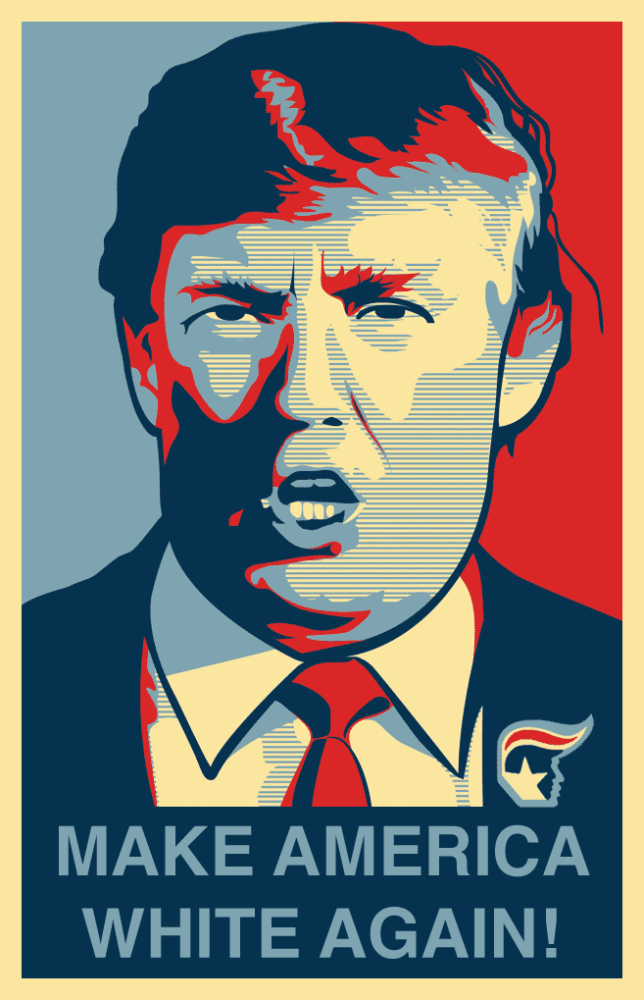

Tracking Nope:
A Critical Genre Studies Approach for New Media Rhetorics of Resistance
By Phil Bratta and Laurie E. Gries
Since Shepard Fairey’s Hope poster came onto the political scene in 2008, thousands of Obamicons have generated commentary about political leaders all over the world. From Leopoldo Lopez in Venezuela to David Cameron in the UK to Narendra Modi in India, such remixes have surfaced to, among other actions, demonstrate support, incite action, and launch biting, yet often humorous critiques. Donald Trump, as one might suspect, has not been left out of this rhetorical play. In fact, iconographic tracking discloses that of all the politicians besides Obama, Trump has most often been targeted in the style of Obama Hope.
In Still Life with Rhetoric, Laurie Gries demonstrates that iconographic tracking can be a useful digital research method for tracking how new media images go viral in a digital age. Here, we demonstrate how iconographic tracking can also help account for how new media genres emerge to play a notable role in the racial politics of the nation-state. If digital visual studies is to have any lasting power, it must ask critical questions about race, power, ethics, and socio-political affairs. When taken up in concert with a critical genre approach, iconographic tracking can disclose how emergent new media genres, such as Trumpicons, help drive and sustain the racial politics at play in the contemporary United States.
Trumpicons, to be clear, are digital webicons depicting Donald Trump that are produced in the basic style1 of Shepard Fairey’s iconic Hope poster (see Figure 1). During Obama’s first presidential campaign, Obamicons emerged as a popular new media genre as new software platforms made the digital production and distribution of Hope poster remixes easily possible and thousands of people took to Obamicons to make their voices heard. An obvious evolution of Obamicons in both design and function, Trumpicons began circulating on blogs, e-purchasing sites, and various social media platforms as early as 2011. It was not until 2015 when Trump announced his presidential campaign, however, that Trumpicons gained momentum and shared widespread recognition. Trumpicons have since circulated widely within the U.S. and across the world in protests, on magazine covers, and in other rhetorical contexts. From “MAGA” to “Bully” to “Unfit,” Trumpicons forward a wide range of commentary about Trump’s politics, character, and ability. In response to Trump’s numerous scandals with women, Trumpicons especially criticize Trump’s misogynist actions—a clear indication that gender plays a significant rhetorical force in this new media genre’s production and circulation. But in this chapter, we are interested in the racial politics of circulation, the way that new media genres and race are wrapped up in a reciprocal feedback loop of (re)production and (re)circulation.
Figure 1. “Make America White Again” Trumpicon. Attribution: Courtesy of the designer James E. O'Loughlin, 2016.
Drawing on the work of Iris D. Ruiz, we take race to be a “negative illusion” with real material consequences that “cast[s] a shadow on people’s ideas of civility, morality, and equality” (13; emphasis in original). We also understand race to be a historically constructed colonial enterprise, invented through logics, rhetorics, and practices of science, religion, and politics, sustained through emerging state technologies, social apparatus, and contemporary and institutional structures of racial inequality (13). We especially believe that in our current day and age, social media plays a significant role in circulating and perpetuating logics and affects of racism that support unequal power dynamics. The racial politics of circulation is a critical concept that draws particular attention to how circulating public discourses regurgitate, reinforce, and/or resist racialized logics, such as white supremacy.
As articulated in previous work (Gries and Bratta), when it comes to the Obama Hope image’s rhetorical circulation, race has always played a contributing factor. Fairey’s Hope poster, for instance, was chosen as an official device for Obama’s campaign over Ray Noland’s designs which presented more accurately Obama’s actual skin color; it was believed that the red, white, and blue palette in Fairey’s design would increase chances for identification and circulation (Gries, Still, 249). While such erasure of race is problematic, it helped solidify Obama as a symbol of hope in the mainstream eye, “representing the depths of progressive change necessary to redefine America in a way that is consistent with its fundamental principles of racial equality and equal opportunity” (McIlwain 141). Shortly after Fairey’s Hope design emerged, however, Obamicons with overt racist inflections began surfacing on a pro-white discussion board as did Obamicons with the n-word and one horrific Obamicon depicting Obama with a noose around his neck. Other racist inflections circulated as well, but as evident alone in these Obamicons, the racial politics driving Obamicons’ circulation related to Obama’s Blackness existing within a white supremacy system (Gries and Bratta 421).
In contrast, with Trumpicons, the racial politics of circulation takes a noteworthy turn toward whiteness in regard to the nation-state. In our previous work, we show how many Trumpicons regurgitate and amplify circulating white supremacist doxai that have become associated with Trump’s campaign, rhetoric, and ensuing policies (421). The “Build the Wall” and “Fuck your Feelings” Trumpicons, for instance, promulgate white nationalist beliefs, escalate the fear of white majority’s decline, and reassert a white (hyper)masculinity of U.S. identity (see Gries and Bratta). Yet, while Trumpicon’s acceleration and amplification of white supremacist doxai is one way to understand their entanglement in the racial politics of circulation, Trumpicons also function to resist white supremacist logics and formations. Rather than continue to study how Trumpicons solidify a dominant racial system in an era of white nationalist postracialism, then, in this chapter we approach the racial politics of circulation with an eye toward resistance.
As evident in our case study of Trumpicons, the relations between race, politics, and the nation-state often get played out in new media genres through competing rhetorics of racial presidentiality that use the president’s image, discourse, and body language to “construct broader meanings about racial politics and the role of race in U.S. national identity” (Cisneros 511). Although white supremacist beliefs and fantasies are finding opportune circulatory paths in new media genres such as Trumpicons, those same new media genres simultaneously push back against such beliefs and fantasies in an intersectional fight against white supremacy. One important inquiry that arises for digital visual studies, then, is how emergent new media genres expand opportunities within and beyond participatory culture to confront racism in our contemporary socio-political climate.
To address this inquiry, we explicate a methodology best identified as critical genre studies. As Amy Devitt notes in referencing Aviva Freedman and Peter Medway’s “Towards More Critical Genre Studies,” “genre theory has been largely uncritical in its treatment of genre as a reflector or constructor of norms, values, and epistemologies” (613). As such, Devitt argues that “theorists must find ways of incorporating diversity, conflict, and tension in their sometimes overly placid views of genre” (613). Scholars such as Adam Banks and Cruz Medina have modeled one way we can do this work—by recovering the ways that African American and Latinx rhetors have innovated with new media genres, such as DJ remixes and digital testimonies respectively, to express their unique voices, tell empowering stories, and strengthen community. Such scholarship supplements (but does not forget or neglect) discussions of the digital divide to underscore how persons of color innovate new media practices and draw on traditional, non-Western oral and aural epistemologies to craft digital stories and arguments that generate “decolonial knowledge that breaks from—and often speaks against—dominant colonial narratives” (Medina). As another model, Freedman and Medway suggest to investigate how genres often simultaneously afford creative action for some and dominance for others; interrogate the racial ideologies pinned to specific genres; and examine the ethical and political implications of such genres at work within specific communities of social practice (11-13). We take up this latter call by taking a critical genre approach to digital visual studies in order to investigate how new media genres such as Trumpicons are playing a notable role in the current racial politics of the nation-state.
In this chapter, we begin by discussing numerous theories related to emergent new media genres and critical genre studies that constitute our methodology. We are heavily indebted to the work of Carolyn Miller who has been foundational to studies of new media genres. But, here, we put Miller’s theories into conversation with Lisa Nakamura and Sara Ahmed, among others, to explicate a framework for studying how many new media genres become entangled in an affective economy of hate and a tense friction of competing logics and discourses related to race and white supremacy. In teasing out the relations between emergent genres, race, affect, and circulation, we aim to demonstrate how a critical genre approach can assist digital visual studies in investigating everyday rhetorics of race and racism. As Raymie McKerrow notes, “The task of unmasking relations of dominance within the context of race relations is not finished” (x). And, as Darrel Enck-Wanzer asserts, because “racism still thrives and circulates in our public culture, . . . active and vibrant anti-racist activism, including scholarship,” is needed (26). It will thus behoove digital visual studies to devote concerted efforts to disclosing how vernacular new media genres are contributing and responding to racial tensions at play in contemporary public life. This is particularly important in that “the mundane, everyday, and routine cultural practices perhaps have the greatest potential to survive, work in in tandem with overt racism, and affect us in their commonplace and taken-for-granted forms” (Lacy and Ono 2). Additionally, as Meta G. Carstarphen and Kathleen Welch note, “while much scholarly inquiry has explored what goes into the construction of racial pathways of identity, little of that inquiry has considered the deliberate ways in which rhetoric has been used to foment racial hate and dissension. These expressions often reveal themselves not in the grand occasions of celebrated oratory, but in the familiar expressions surrounding us” (255). In today’s day and age, new media genres especially play a ubiquitous means of promulgating such expressions of racial hate and dissention. To help understand how such expressions circulate and operate, here we thus extend the work of scholars who have provided important inroads into studying how new media genres, visual rhetoric, Internet culture, and race are complexly intertwined in our everyday lives.
After explicating our methodology, we then briefly describe how we adapted iconographic tracking for this study, focusing specifically on our coding/tagging/marking practices for the sake of transparency. We experiment with digital visualization techniques to demonstrate how the racial politics of the nation-state is embroiled in the production, circulation, and rhetorical functions of Trumpicons and vice versa. In our case study section, we draw on these data visualizations to describe and analyze the findings from our research, zooming in on three particular Trumpicons to demonstrate their entanglement with white nationalist postracial logics, rhetorics, and policies through satirical parody, commodity activism, and protest. Finally, we close by acknowledging that while it is clear that Trumpicons participate in diverse kinds of political resistance, future work in digital visual studies might dig more deeply into the actual ability of both satirical new media genres and commodity activism to generate change in an era dominated by patriarchal white capitalism.
1. In some Trumpicons, as one reviewer so kindly pointed out, the font style differs from Fairey’s Hope design. As with many Obamicons, the color palette sometimes changes as does occasionally the illustration style.↩